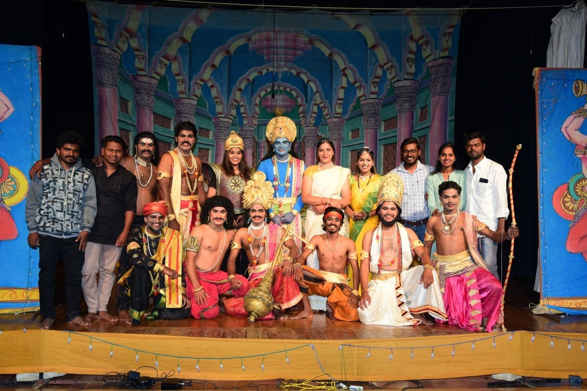
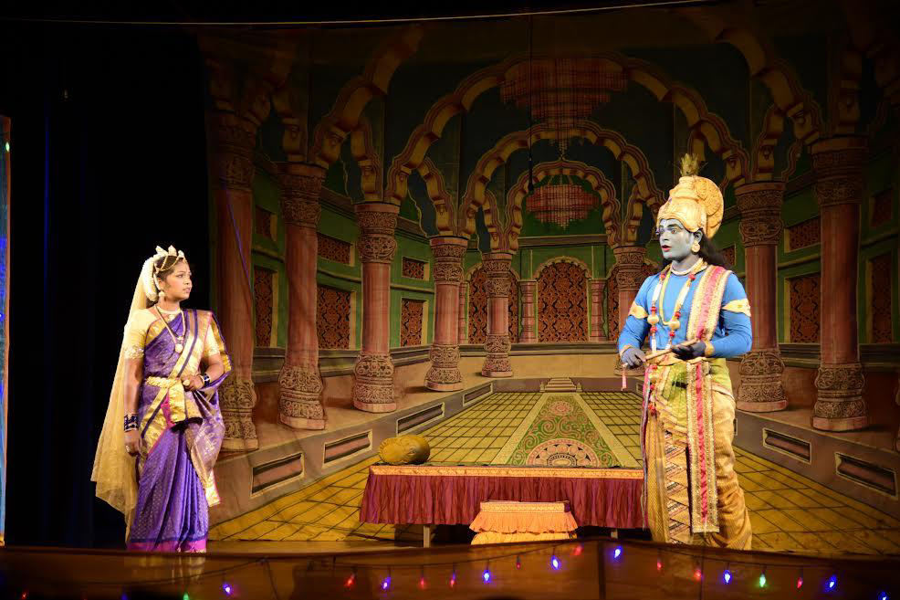
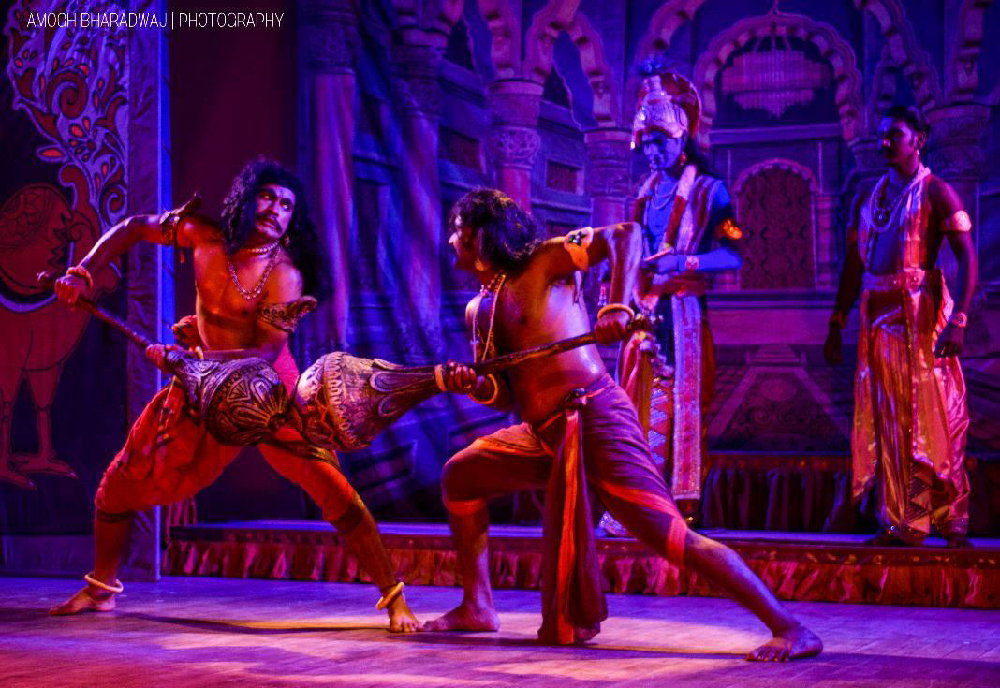
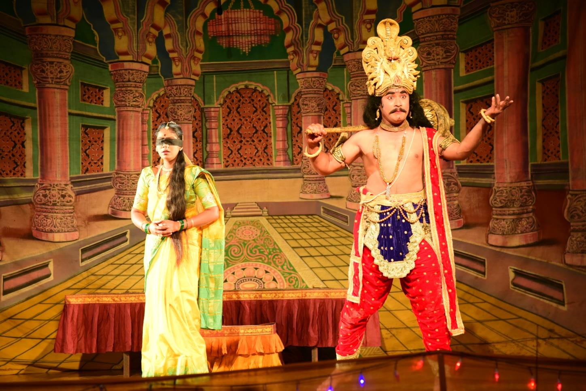
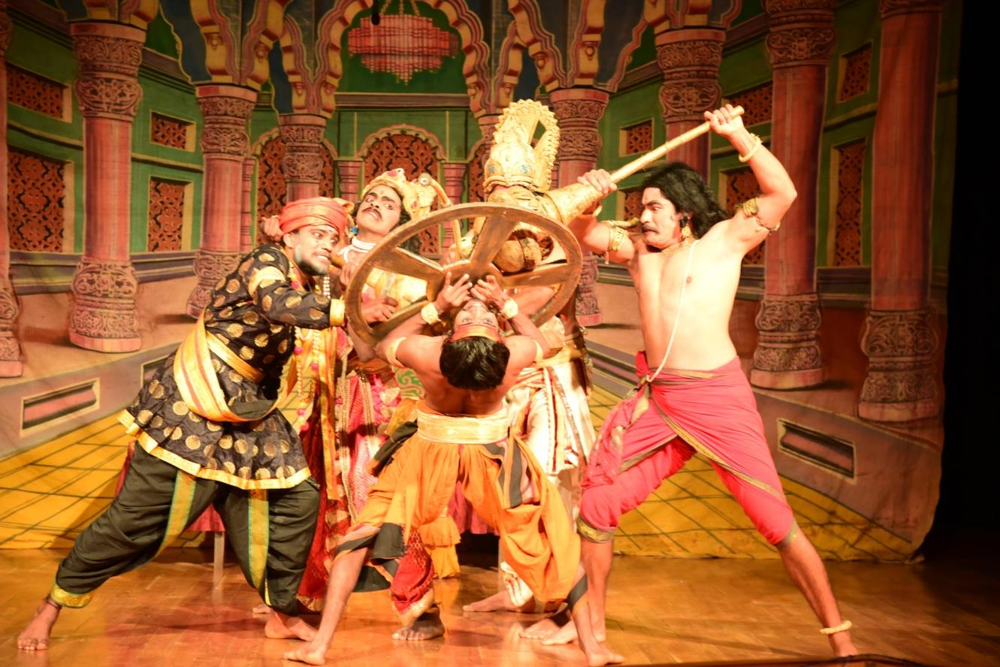

Theatre for the people of Karnataka
Sathyashodhana Ranga Samudaya is a cultural trust from Heggodu that takes theatre to towns, villages and hamlets — 713 shows, 10 productions and more than six lakh spectators so far.
A troupe that carries its stage on the road
Janamanadata began in May 2005 as a band of seven actors. It grew into Sathyashodhana Ranga Samudaya, a cultural trust registered in October 2015 at Heggodu. Today it has 17 artistes, and Janamanadata is its theatre division.
The trust works toward liberty, equality, fraternity and social justice. It also gives young theatre activists a place to build their craft, under the leadership of theatre practitioner and teacher Dr. M. Ganesha.
Read more
Kurukshethra
A Company Natak-style production built from a composite script that draws on B. Puttaswamayya and Kuvempu, and on earlier stagings by P. Vajrappa and Kalloor Shrinivas. Design & direction by Dr. M. Ganesha; music by Arunkumar M.




The play follows Krishna’s peace mission to Duryodhana, the insults he suffers in the Kaurava court, Draupadi’s demand for justice, and the great war. Along the way it looks at dharma and adharma, peace and violence, and revenge and reconciliation. Stylised acting, songs, elaborate sets and costumes bring the epic to audiences of up to 1,500 people a night.
Self-reliant, collective, on the move
Everyone does everything
The artistes handle all on-stage, backstage and off-stage work themselves.
Shared costs, shared earnings
Members pool the initial investment each season and share the collections equally at the end of the tour.
A show almost every day
After a month of rehearsals, the troupe tours for 2–3 months, playing about 45–55 shows in 60 days, one every 25–75 km.
No government grants
The troupe runs on its artistes’ own investment, donations from patrons and fees paid by host organisations.
Host a Janamanadata show
Our productions adapt to many kinds of spaces, from town halls to village grounds.